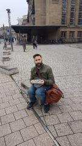
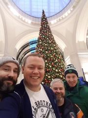
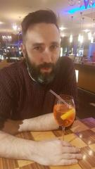
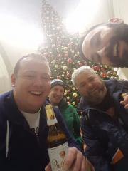
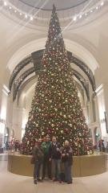

Logistics. It's All about Logistics
10 years on and we are still going strong. A lot has changed in that time. . the jeans we wore in Munich are a touch tighter, the world has voted to hate each others differences instead of enjoying them, hostels are less scary hovels and more cosy ikea showrooms (RP et al 2016), JT members have fathered (at least) 5 children (mainly John). One thing however doesn't change and that is our love for the food, beer and people of Germany and this trip, so far, hasn't disappointed.
After a brief "meat up" in Berlin where we went to a fake Irish pub and a Plastic Munich beer hall (Berlin needs to have a word with itself) we headed to the enormous main station to venture deep into the German abyss. So slick is Jimbotours Plc in its 10th year we can use the great city of Berlin as merely a transportation hub. So much has changed that Shaun lead the boys. new rucksack on back, stealth like through the numerous levels of the maze-like station to arrive at our required platform with seconds to spare until departure. Where is our destination I hear you ask .....Leipzig ...........yeah Shaun had never heard of it either (some things don't change).
We arrived to Leipzig station which is so huge that they had a McDonald's and a Burger King. We hopped on a tube and came to a beautiful glass station where our hostel was located. Following a bit of navigation using google maps (jimbo 10 years ago would hate me) we came to our hostel. The hostel was beautiful with a nice receptionist, pool table and beer fridge if the girl in Prague is still in the hostel business she could learn a few things.
The 3 boys, Shaun, RP and JD headed to the bar district of this cute city. Similar to Eindhoven there was a street full of cool bars packed with people watching the local energy drink sponsored football team playing on tv. We waited patiently to get served by the good looking but shoreditch-esque moody barmaid growing thirsty until a German guy stopped her in her time tracks and demanded she furnish us with our chosen imbibements. After the wolf of Leipzig's intervention we had near 1 on 1 bar service. The guys we met at the bar were cool and brought us in search of 'the door'. They brought us to a great little darts and table football bar where we enjoyed all
It had to offer. All this time our very own Anika Rice was travelling across Europe solving clues to find out where we were. The man is stevie who with the help of many locals and his German guide book located us via the worst Irish bar in the world.
A great night continued with numerous bars and tasty kebab before heading home and introducing the new melancholy stevie b to his bunk bed. After 10 years one thing we can still be sure of is that Nigel Farage and that tosser Boris Johnson were wrong - long live Europe and long live Jimbotours
X
Photographs


{kind=link}

{kind=link}

{kind=link}

{kind=link}

{kind=link}
